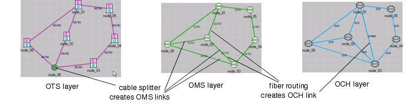

Creating a Baseline Scenario > Configuring Cable Splitters and Fiber Routes
Configuring Cable Splitters and Fiber Routes
If a network contains cable splitters and fiber routes, it has different topologies at lower layers (OCH, OMS and OTS). In such networks there are multiple ways to implement protected routing, depending on the layer at which link disjointness of working and protecting paths is requested. If a network has no cable splitters or fiber routes, OTS, OMS, and OCH topologies are identical. For more information about protected routing and link disjointness, see Link Disjointness for Working and Protection Paths.
Figure 3-16 shows how cable splitters and fiber routes can result in different topologies at different network layers. At the OTS layer, the cable splitter in node_00 has been configured to create three OMS links between its adjacent nodes. At the OMS layer, a fiber route through node_02 results in an OCH link between node_01 and node_03.
Figure 3-16 Creating OMS and OCH Links Using Cable Splitters and Fiber Routing

| Home © 1987-2007 OPNET Technologies, Inc. All Rights Reserved. This software may be covered by one or more U.S. Patents. See complete patent notice in the Legal Notices section. OPNET Support Center |